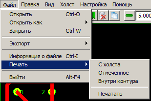
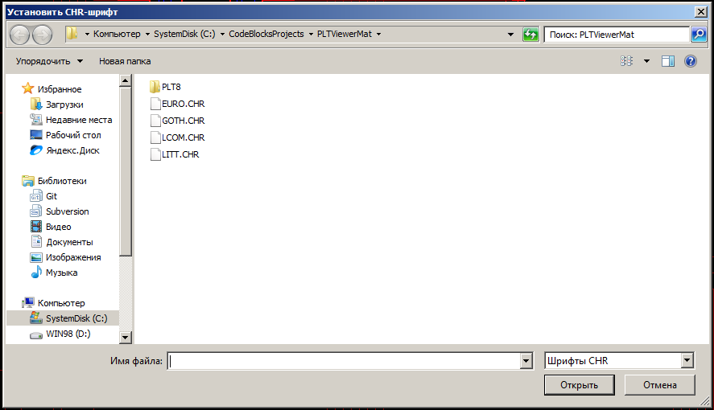
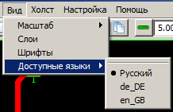
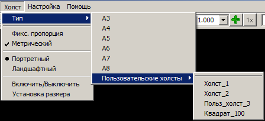

Программа ПиКАДОГЛЯД - просмотрщик документов DOS PCAD. Представим основные инструменты, которые предоставляет данная программа для обработки таких файлов. Все функции программы доступны через её главное меню (хотя, конечно, имеются и другие способы доступа). Поэтому наиболее целесообразно составить их обзор перечислением имеющихся пунктов меню, снабжая их, по необходимости, краткими комментариями.
Пункт основного меню "Файл" вызывает вот такое подменю:
Первый подпункт "Файл/Открыть" - открытие просматриваемых файлов. Он позволяет из единого диалога открыть любой файл, поддерживаемой программой. Диалог открытия, возникающий при выборе данного пункта меню - стандартный системный.
Второй подпункт "Файл/Открыть как" позволяет явным образом указать тип открываемого файла и желаемый вид его загрузчика. После выбора данного подпункта всплывает подменю следующего уровня, содержащее все существующие на данный момент в программе загрузчики, посредством которых можно открыть те или иные файлы поддерживаемых типов.
Подпункт "Файл/Закрыть" завершает работу с текущим открытым файлом, возвращая программу в начальное состояние.
Через пункт "Файл/Экспорт" осуществляется доступ к операциям, позволяющим конвертировать открытый PCAD-файл в файлы изображений некоторых других распространённых графических форматов. Всплывающее подменю нижнего уровня решает две задачи: ограничивает множество примитивов, которые будут отправлены в экспортные файлы, а также выполняет собственно экспорт, позволяя выбрать определённый тип целевого файла.
Первые три пункта - "Файл/Экспорт/С холста", "Файл/Экспорт/Отмеченное", "Файл/Экспорт/Внутри контура" - уточняют подмножество элементов для экспорта. Каждый перечисленный пункт - двоичный переключатель (включён/выключен). Примитив будет направлен на экспорт только в том случае, если он удовлетворяет требованиям всех активных (включённых) пунктов меню. Так, пункт "Файл/Экспорт/С холста" ограничивает экспорт только теми элементами, которые хотя бы частично находятся на холсте. Пункт "Файл/Экспорт/Отмеченное" отбирает только выделенные примитивы, а пункт "Файл/Экспорт/Внутри контура" - те элементы, описанный прямоугольник которых имеет непустое пересечение с выделяющим контуром (если он присутствует).
Остальные пункты подменю непосредственно выполняют экспорт графической информации в какой-либо определённый формат файла, указанный в названии соответствующего пункта. Так, пункт меню "Файл/Экспорт/DXF" формирует файл в формате DXF(открытый формат файлов для обмена графической информацией между приложениями САПР), а пункт меню "Файл/Экспорт/BMP" выполняет построение изображения в виде файла типа Windows-BMP. Все операции экспорта разделены на две группы - вывод информации в векторные форматы и построение растрового изображения. Файлы типа "Текст", "DXF", "SVG", "Metafile" - векторные, "BMP" и "JPEG" - растровые. Пункт "Текст" тут на особом положении - он выводит полную информацию об изображении в специальном текстовом формате (частично человекочитаемом и самодокументируемом), который может в дальнейшем передаваться на вход какой-либо сторонней программы, которая будет использовать эти данные в своих собственных целях. При экспорте в "Текст" все фильтры примитивов типа "С холста", "Отмеченное" или "Внутри контура" игнорируются, в текстовый файл всегда сохраняется полная информация обо всех элементах изображения.
Пункт "Файл/Информация о файле" выводит на экран специальный диалог, содержащий основную информацию о текущем загруженном файле. Там приведены сведения о типе файла, загрузчике, флагах, режимах, единицах измерения длины, слоях и апертурах, имеющихся в составе файла либо применяемых для его отображения. Также там предоставляется возможность сохранить все эти данные в текстовый файл.

Пункт меню "Файл/Печать" - получение "твёрдой копии" изображения на печатающем устройстве. Подменю содержит, прежде всего, набор уже знакомых вам переключателей - фильтров примитивов. Это пункты "Файл/Печать/С холста", "Файл/Печать/Отмеченное" и "Файл/Печать/Внутри контура". Их работа протекает так же, как и в описанном выше инструменте экспорта рисунка.
Посредством пункта "Файл/Печать/Печатать" осуществляется непосредственный процесс распечатки. После выбора данного пункта на экран выводится стандартный диалог предпросмотра печати wxWidgets.
С помощью органов управления этого диалога можно более детально ознакомиться с подлинным видом и очертаниями картинки, которая будет получена при печати, а также с размещением её на бумаге. Кроме того, есть возможность установить масштаб выводимого изображения (выпадающий список масштабов на полосе инструментов), отказаться от распечатки (кнопка "Закрыть"), и, собственно, выполнить операцию кнопкой "Печать".
Пункт меню "Файл/Выйти" позволяет завершить работу программы.
На данный момент программой поддерживаются два типа "правочных" операций: операция копирования части изображения в системный буфер обмена ("карман"), а также отмечающие операции, позволяющие сформировать особую совокупность примитивов изображения - подмножество отмеченных элементов. Прежде всего, укажем уже привычные переключатели фильтрации - "Файл/Правка/С холста", "Файл/Правка/Отмеченное" и "Файл/Правка/Внутри контура". Все они ограничивают множество копируемых объектов при выполнении операции "Файл/Правка/Копировать указанное", а два из них (кроме "Файл/Правка/Отмеченное") также применяются при отмечающих операциях ("Отметить", "Инвертировать", "Снять выделение").
Следующая группа пунктов меню - отмечающие операции, которые позволяют отметить или разотметить некоторую совокупность примитивов изображения. Отметка - один из способов выбора объектов для последующего выполнения над ними каких-либо операций. Назначение отмечающих операций вполне однозначно следует из названия соответствующих им пунктов меню - "Отметить указанное" отмечает множество примитивов на холсте или внутри контура (если эти режимы включены описанными выше переключателями), "Инвертировать указанное" - обращает состояние отмеченности элементов на противоположное, "Снять указанные отметки" - снимает отметки с указанных примитивов.
В меню "Правка" содержится ещё два пункта - "Копировать" и "Копировать указанное". Первый из перечисленных пунктов доступен также через одну из кнопок инструментария основного окна программы. Второй пункт ("Копировать указанное") копирует в карман операционной системы множество элементов рисунка, ограниченное переключателями фильтрации данного меню. Первый же пункт ("Копировать") выбирает совокупность копируемых примитивов автоматически - копирует только отмеченные элементы, если существует хотя бы одна отметка, вдобавок ограничивает копируемое множество холстом, если он активен, а также, дополнительно, налагает ограничение и по внутреннему полю выделяющей рамки - если она существует.
В меню "Вид" сосредоточены операции, определяющие общий вид просматриваемого изображения. К ним относятся установка рабочего масштаба, управление слоевой структурой картинки, выбор системного шрифта, применяемого для рисования текстовых примитивов изображения, а также выбор используемого языка программы (средство обеспечения м11сти).
Смысл, назначение и способы управления рабочим масштабом изображения более подробно описаны здесь. Вкратце можно указать, что назначение и определение масштаба в программе вполне интуитивно и естественно: масштаб - это соотношение между видимыми (отображаемыми) размерами рисуемого изображения и его исходными (физическими) размерами, указанными в базе данных (файле) картинки. Масштаб изображения, в общем случае, задаётся в программе независимо по двум осям - по горизонтальной (абсцисс) и вертикальной (ординат). То есть в общем случае масшатбы по этим осям будут различаться. Предусмотрен также специальный режим, при котором масштабы по осям совпадают и управляются совместно. Методы регулировки масштабов очень разнообразны и многочисленны, поэтому тут их детального описания приводиться не будет. Найти такое подробное описание можно найти по ссылке выше.
Типичный PCAD-документ имеет слоистую структуру - состоит из набора отдельных слоёв одинакового размера, которые при выводе изображения налагаются друг на друга, рисуясь последовательно и независимо на одной и той же площади. Поэтому программа предоставляет некоторые средства воздействовать на этот процесс. Для этого существует пункт "Вид/Слои", который активизирует следующий диалог. Он позволяет настраивать и изменять ряд параметров слоистой структуры изображения.
Для рисовки текстовых элементов PCAD-документов требуется дополнительная информация о шрифтах, которая в самом документе не содержится. На данный момент программа поддерживает два различных текстовых движка, принципиально отличающихся как по алгоритмам работы, так и по форматам используемых шрифтов. Переключение движков выполняется соответствующим переключателем (крыжиком) в диалоге общей конфигурации программы (пункт меню "Настройка/Параметры", переключатель "Использовать собственный текстовый движок").
В зависимости от выбранного движка потребуются шрифты разного типа и формата. "Системный движок" (применяется, если вышеуказанный крыжик сброшен) применяет для рисовки какой-либо обычный системный шрифт, который и можно выбрать посредством данного пункта меню, который задействует для этого стандартный диалог выбора шрифтов, предоставляемый каркасом wxWidgets.

Если же крыжик активирован, применяется собственная система рисования текста, которая использует шрифты в формате CHR (предложены фирмой Borland для применения в библиотеке BGI - Borland Graphic Interface). В этом случае пользователю будет предложено выбрать какой-нибудь такой шрифт с помощью обычного диалога открытия файла. Если же корректный шрифт не будет указан, будет установлен CHR-шрифт по умолчанию.
Пример подменю выбора языка междуличия программы:

Через это подменю выполняется переключение рабочего языка междуличия программы. Каждый его пункт соответствует одному из доступных языковых переводов, найденных при запуске программы. Базовый и всегда доступный язык, не требующий дополнительных ресурсов - русский.

Холст - ещё один инструмент выделения и организации примитивов изображения. Как и все прочие инструменты выделения, он позволяет ограничить множество элементов, к которому в дальнейшем планируется применить ту или иную операцию. Кроме того, он представляет собой наглядный образ какой-либо подложки (например, бумажной форматки или листа фольгированного стеклотекстолита), на котором можно тем или иным способом разместить печатаемые (или экспортируемые) элементы изображения.
На рисунке выше приведён вид подменю "Холст", с помощью которого осуществляется доступ к инструментам управления свойствами холста. Эти инструменты позволяют задать размер холста (стандартный - "Холст/Тип/..." и нестандартный - "Холст/Установка размера"), ориентацию ("Холст/Портретный" и "Холст/Ландшафтный"), а также включить либо выключить его ("Холст/Включить/Выключить"). Для выполнения аналогичных функций также доступны ряд органов управления на полосе инструментов главного окна. Среди них два вертуна для установки произвольного размера холста, а также два переключателя ориентации и активности холста.
Предустановка холстов нестандартного размера выполняется с помощью такого диалога. Кроме размеров нестандартных холстов в этом диалоге устанавливается ещё один существенный параметр - тип единицы измерения размеров холстов (их доступно две - миллиметр или сотая дюйма). В дальнейшем именно эта единица будет применяться для установки или корректировки размера текущего активного холста вертунами инструментария.
На данный момент это подменю содержит только один пункт - "Настройка/Параметры". Этот пункт вызывает такой диалог. Через его посредство устанавливается ряд параметров программы, имеющих общее значение. Всего на данный момент глобальных настроек существует четыре - набор рабочих апертур, единицы измерения размеров, дополнительный масштабный коэффициент и необходимость применения "подмасштаба" при рисовании на экране монитора. Среди них есть как те, которые определяют некоторые особенности рабочего процесса программы, так и использующиеся при загрузке некоторых типов поддерживаемых PCAD-документов. Параметры второго типа (список апертур и список свёрл) должны быть настроены перед открытием файлов, которым они требуются.

Завершающий пункт главного меню - пункт "Помощь". Оно содержит два подпункта - "Индекс" и "О программе". Первый подпункт - "Индекс" - активизирует ту самую систему помощи, с которой вы сейчас и работаете. Второй пункт - "О программе" - является типовым для современных междуличий и выводит на экран диалог с краткой информацией о данной программе. Там содержится небольшой текст, описывающий её назначение, функциональность, координаты разработчика и способы связи с ним, а также текущую версию программы и дату сборки её исполняемого модуля.